The Indigenous Paragon
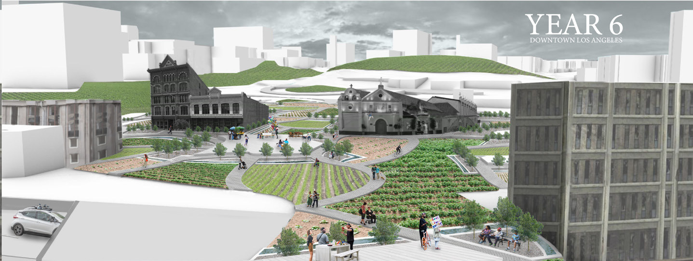
- Type
- Undergraduate architecture thesis
- School
- California Polytechnic State University, San Luis Obispo
- Advisor
- Brian Osborn
- Location
- Los Angeles
- Year
- 2020–21
- Book
- PDF, 9 MB
Can architecture make room for urban Native American identity in a city built on displacement?
More than 78% of Native Americans in the United States live in cities, a result of federal termination and relocation policies, yet support and architecture that reflect their culture have not followed them. Many urban Native Americans feel cut off from their heritage.
Approach
The thesis traces the history of displacement in Los Angeles and maps where former village sites now lie. It proposes reclaiming spaces shaped by speculation for places of peace, community, education and advocacy, and shows how the landscape and buildings would grow over ten years.
Book
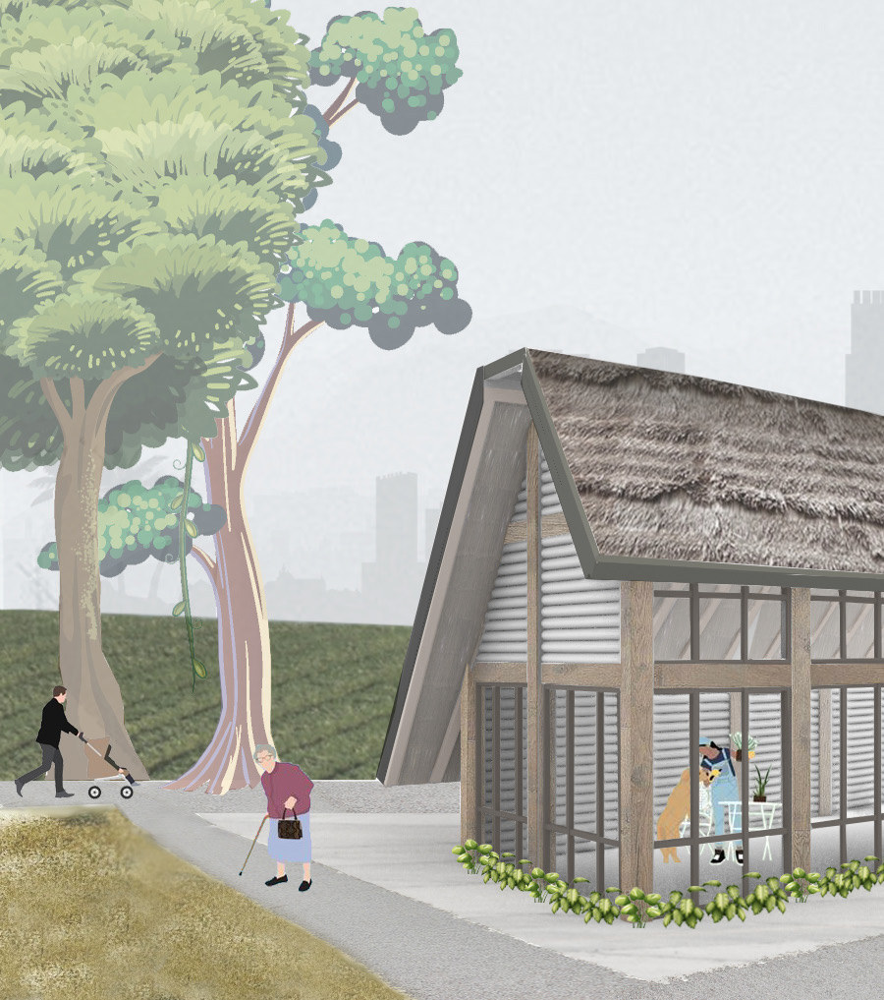
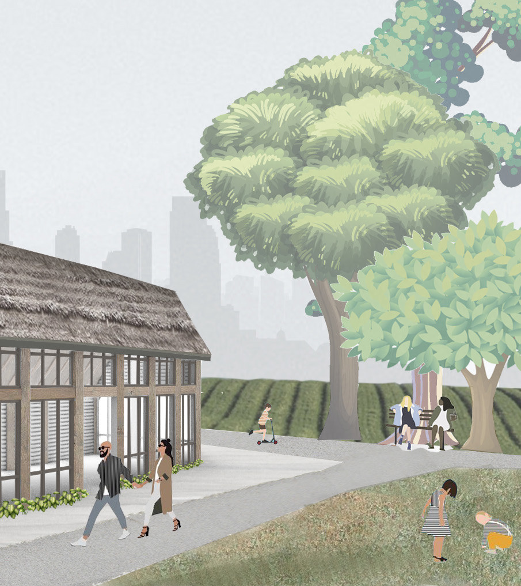
Ten years of growth
The site changes as planting, buildings and community take root.
Mapping
Tracing displacement and former village sites across the United States and Los Angeles.

Design
Masterplan, sections and building.
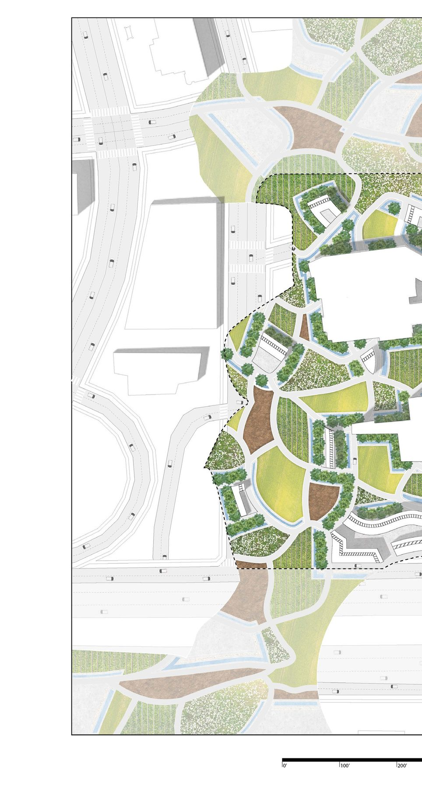
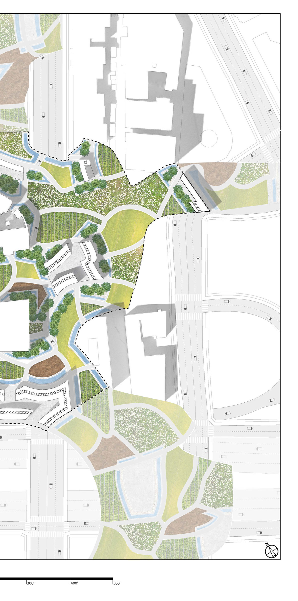
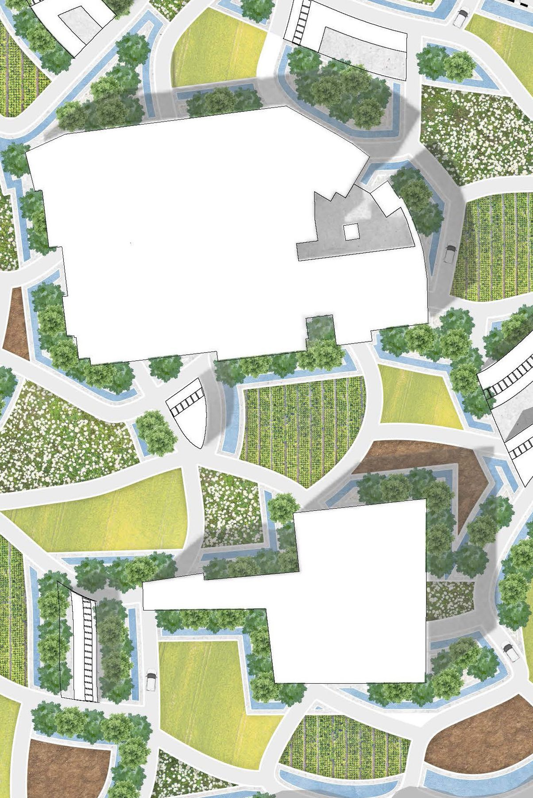
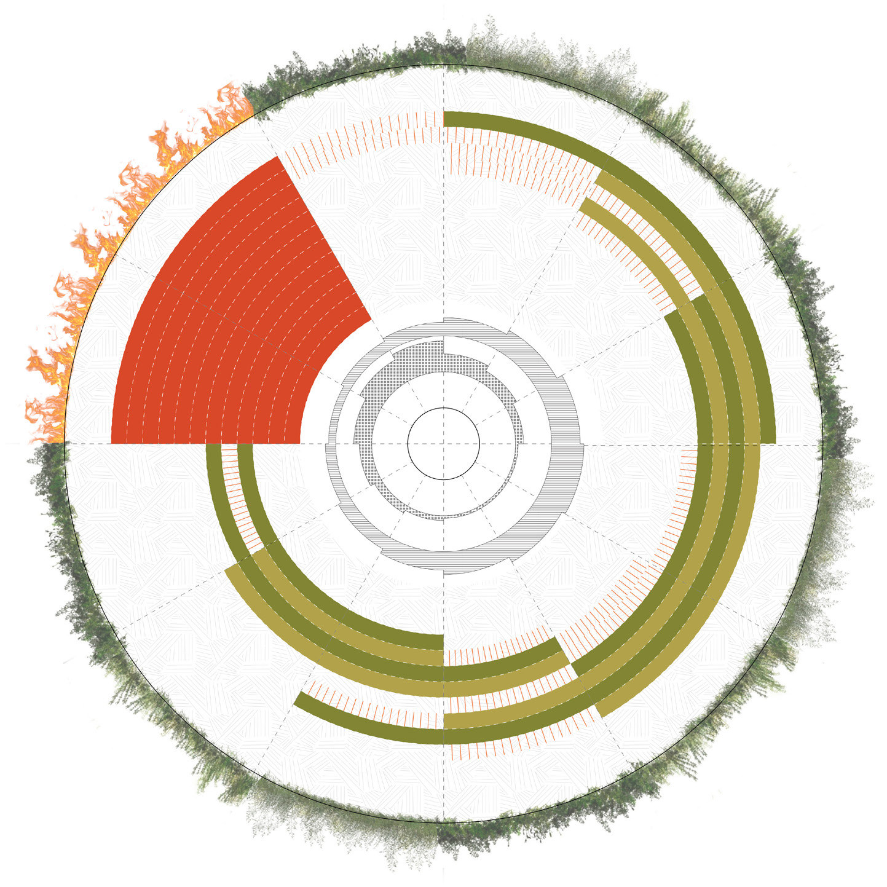
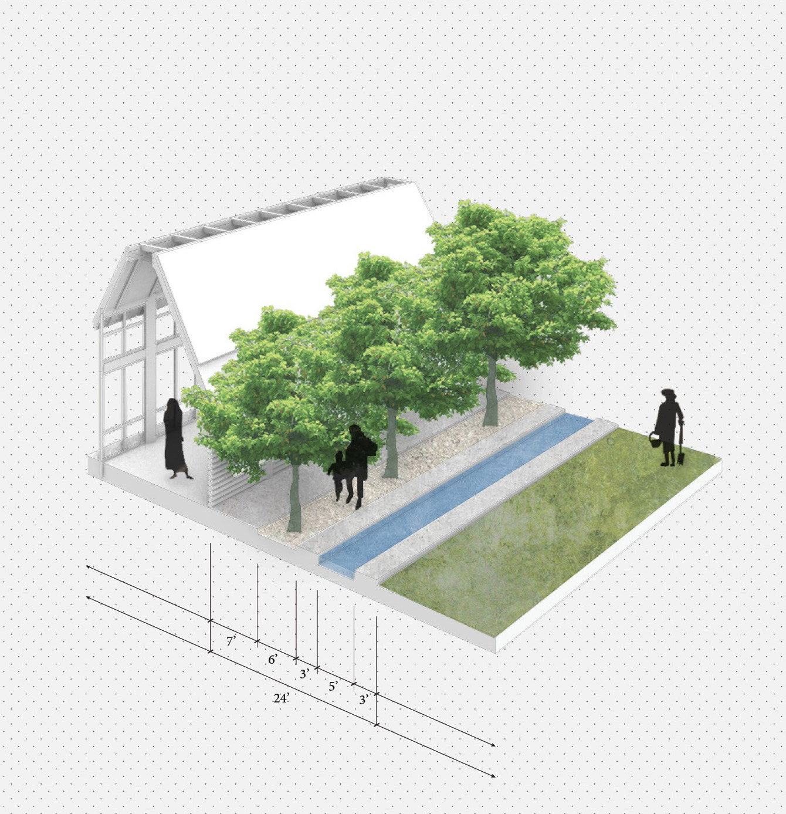
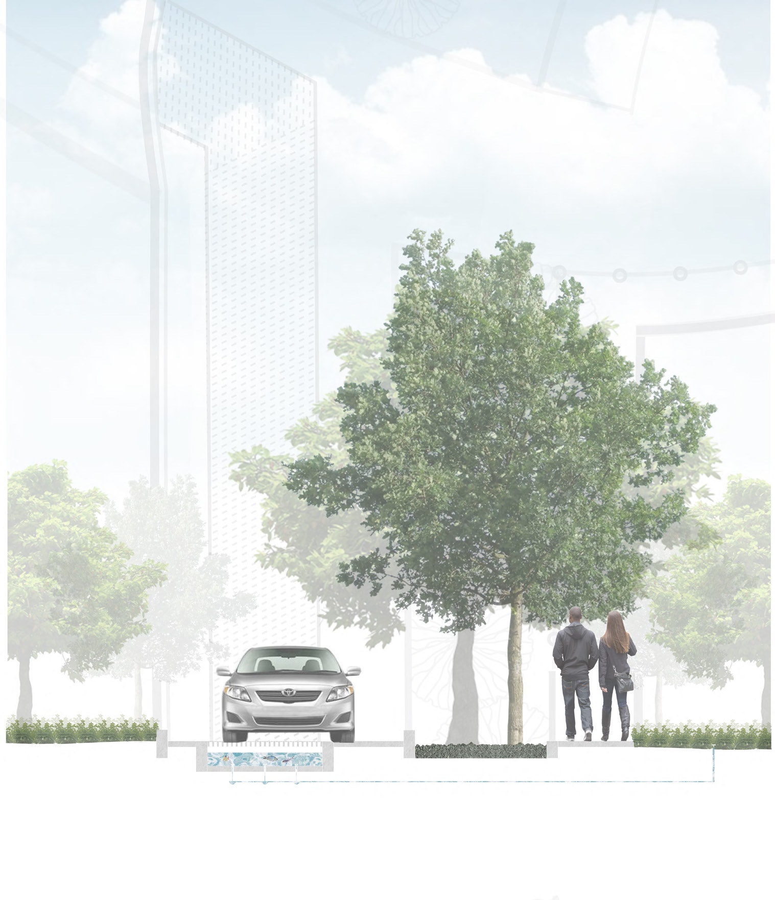
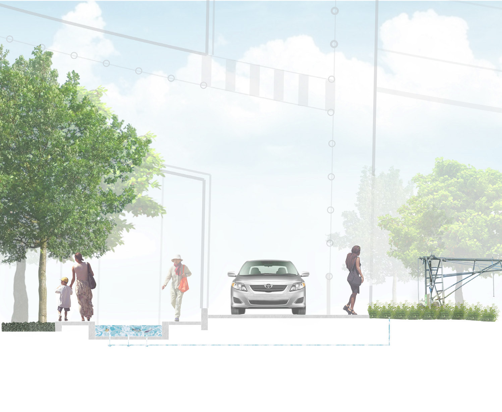
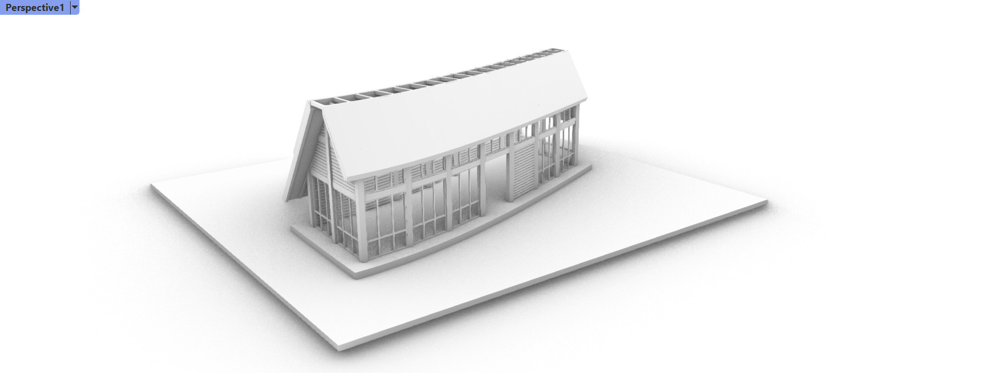